UBI文件系统使用指南
1. 在内核中使能UBI/UBIFS¶
当前内核版本5.10.y，以project config
ipc_i6c.spinand.glibc-11.1.0-squashfs.027b.256.qfn128_defconfig为例，介绍如何开启内核UBI/UBIFS。ipc_i6c.spinand.glibc-11.1.0-squashfs.027b.256.qfn128_defconfig使用的内核配置文件为infinity6c_ssc027b_s01a_spinand_defconfig(配置文件中变量CONFIG_KERNEL_CONFIG的值)
1.1. 内核配置UBI选项¶
-
配置环境变量
export PATH=交叉编译toolchain所在路径:$PATH
export ARCH=arm
export CROSS_COMPILE=arm-linux-gnueabihf-
-
加载配置文件
make infinity6c_ssc027b_s01a_spinand_defconfig
-
配置编译选项
make menuconfig
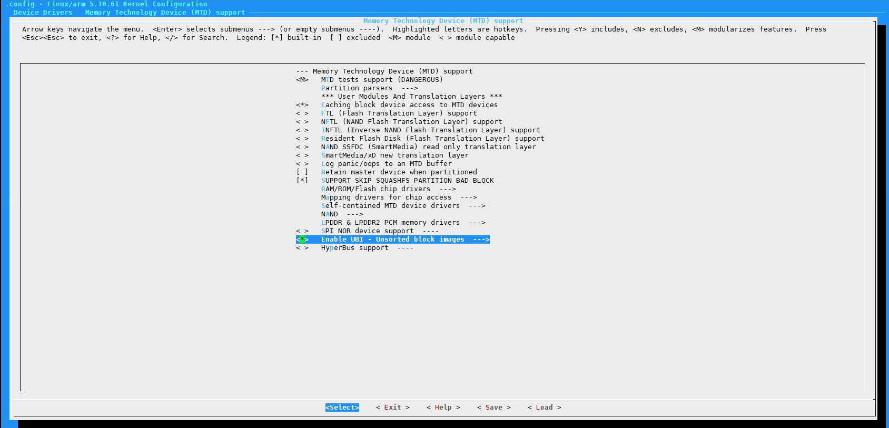
Figure 1: Enable the UBI
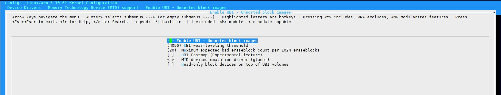
Figure 2: UBI options
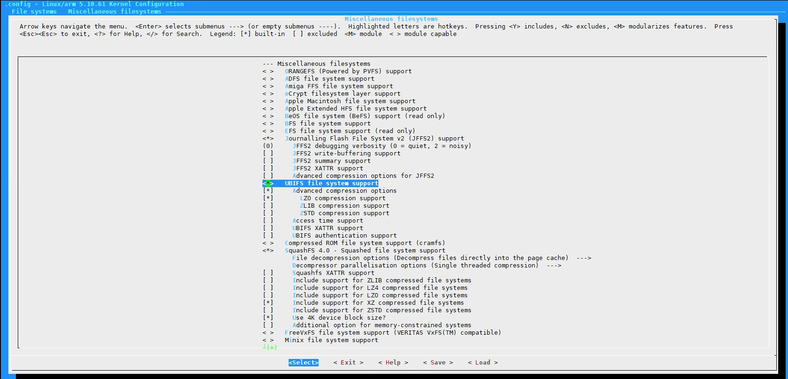
Figure 3: Enable UBIFS
配置好后退出menuconfig，并选择"Yes"保存新的配置
-
制作defconfig
make savedefconfig
-
更新内核编译配置文件
cp defconfig arch/arm/configs/infinity6c_ssc027b_s01a_spinand_defconfig
1.2. UBI设备驱动选项说明¶
-
UBI wear-leveling threshold
UBI系统会在每个擦除块的EC头中记录每个擦除块发生擦除操作的次数，这个选项控制所有擦除操作次数中，最小值和最大值之间允许的最大间隔。默认为4096，对于MLC flash，由于其寿命比较短，建议把这个值配置的小一些，比如256。
-
MTD devices emulation driver (glueabi)
MTD设备模拟驱动，开启这个选项，每当创建一个卷时，UBI将会同时模拟出一个MTD设备。可以使用这个功能在UBI上面运行其他使用MTD的文件系统。
2. UBIFS使用举例¶
制作UBIFS文件系统镜像和UBI镜像需要用到linux mtd-utils软件包中的工具
2.1. 制作UBIFS文件系统镜像¶
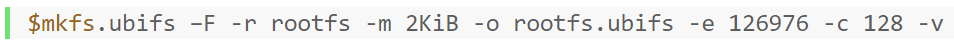
-F使能"white-space-fixup"，制作母片时或者把UBIFS镜像转化成UBI镜像并通过uboot烧写时，需要使用这个功能，否则UBIFS可能会无法正常使用。
-r rootfs表示将要被制作为UBIFS镜像的目录为"rootfs"，这个参数也可以写为"-d rootfs"，两种格式都支持。
-m 2KiB表示Flash最小读写单元是2KiB，这个参数也可以按Byte表示写为"-m 2048"。这里使用的NAND Flash芯片的Page大小是2KiB。最小读写单元是指FLASH芯片支持的一次读写操作，最小允许操作的字节数，对NAND Flash而言，是Page大小(如:2K/4K)；对NOR Flash而言，是一个Byte。
-o rootfs.ubifs制定制作出来的UBIFS镜像名称为"rootfs.ubifs"
-e 126976表示逻辑擦出块的大小。
逻辑擦除块的大小可以通过计算获得，启动时UBI attach时也会输出相应的信息，计算方式为:
-
获取MTD设备的eraseblock大小
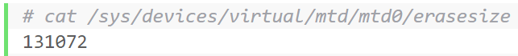
-
最小读写单元可以通过Flash数据手册获得，也可以通过sysfs查看MTD设备信息获得，通过sysfs查看MTD信息的方式如下:
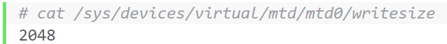
-
计算逻辑擦除块大小
eraseblock size - 2 * writesize = 131072 - 2 * 2048 = 126976 (bytes)
注意：如果Flash芯片支持sub-pages，则只需要减一个writesize，因为在支持sub-pages的NAND Flash上UBI支持把EC header和VID header放到同一个page中。可以通过查看subpagesize的值，通过对比其值是否和writesize一样来判断是否支持sub-pages。查看subpagesize值的方式为:
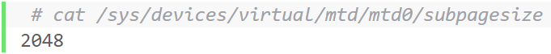
UBI attach时也会输出对应的信息:
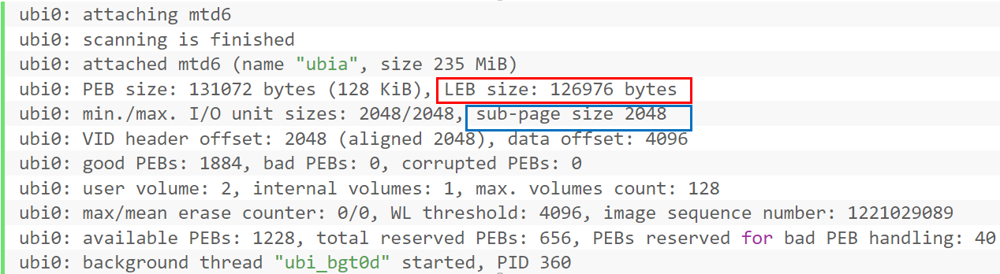
-c 128表示此文件系统最多使用"128"个逻辑擦除块。计算"128 * LEB"得到这个文件系统的最大可使用空间。
-v显示制作UBIFS镜像过程中的详细信息。
以上红框标记出来的，是此Flash芯片的逻辑擦除块大小，篮筐标记出来的是此Flash芯片的subpage大小。
2.2. 制作UBI镜像¶
-
需要先按照前面所述方式，作出需要的UBIFS文件系统镜像，如:miservice.ubifs，customer.ubifs
-
制作UBI镜像配置文件
把UBIFS文件系统镜像制作成UBI镜像时，需要一个配置文件ubinize.cfg作为ubinize程序的输入参数。其内容如下图所示:
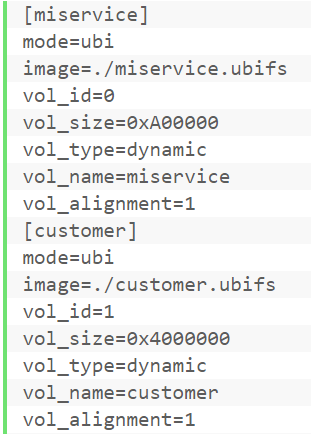
mode=ubi是强制参数，目前不支持其他值，保留以后扩展功能使用。image=./*.ubifs表示UBI volume对应的UBIFS文件系统镜像文件名称。vol_id=0/1表示UBI volume的ID号，UBI镜像可以包含多个UBIFS文件系统镜像，每一个UBIFS文件系统镜像都不同的UBI volume(卷)中。vol_type=dynamic表示对应volume类型是可读写的。如果这个volume存的是只读的数据或文件系统，则对应的参数应该为"vol_type=static"。vol_name=miservice/customer表示volume的名称，可以使用volume名称来mount对应volume上的UBIFS文件系统。vol_alignment定义volume alignment的值，固定为1，设置其他值会导致LEB可用空间变小。 -
生成UBI镜像
使用ubinize生成UBI镜像的命令为:
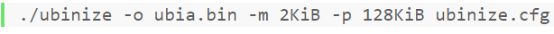
-o ubia.bin表示输出的UBI镜像名称为"ubia.bin"，输入的UBIFS镜像文件名由ubinize.cfg配置文件指定。-m 2KiB表示这此Flash最小读写单元是"2KiB"。-p 128KiB表示此Flash的擦除块大小。注意这个是物理擦除块大小，不是逻辑擦除块大小。ubinize.cfg是一个配置文件，前面已经详细讲解过此文件的内容。
2.3. 制作UBI烧入¶
U-BOOT下，烧写UBI镜像文件的命令如下图所示:
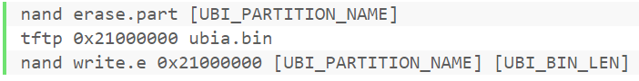
说明:
UBI_PARTITION_NAME表示UBI分区的名字，如ubia
UBI_BIN_LEN表示UBI镜像(如ubia.bin)的大小
3. ALKAID UBIFS分区使用举例¶
ALKAID build环境中集成了UBIFS文件系统镜像和UBI镜像的制作流程，自动完成对应镜像文件的制作。
以project config ipc_i6c.spinand.glibc-11.1.0-squashfs.027b.256.qfn128_defconfig为例，介绍如何在ALKAID环境中使用UBIFS分区，ipc_i6c.spinand.glibc-11.1.0-squashfs.027b.256.qfn128_defconfig中CONFIG_IMAGE_CONFIG的值为"spinand.socecc.squashfs.partiton.config"，这个是它的分区配置文件，其中使用到UBIFS文件系统的分区配置如下:
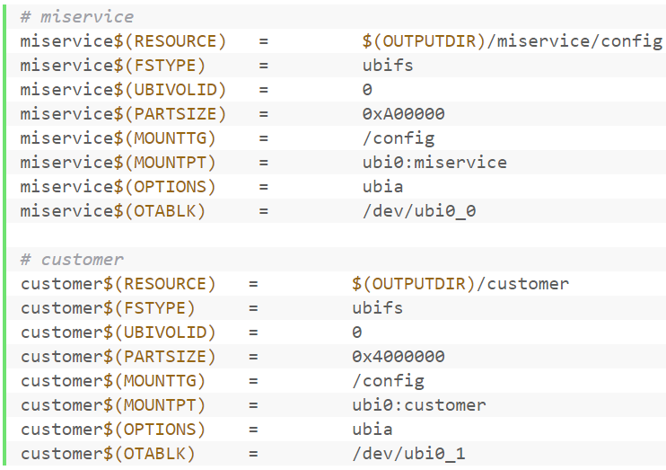
注意：miservice和customer是分区名称
使用UBIFS分区需要配置这几个参数:
分区名称$(FSTYPE) 指定分区文件系统类型，这里是"ubifs"
分区名称$(UBIVOLID) 指定这个UBIFS分区所在卷的volume id
分区名称$(PARTSIZE) 指定这个UBIFS分区的占用的LEB空间
分区名称$(MOUNTTG) 指定这个UBIFS分区的挂载点
分区名称$(MOUNTPT) 指定这个UBIFS分区mount时的device参数值
分区名称$(OPTIONS) 指定把这个UBIFS分区的文件系统镜像打包进去的UBI镜像名字
分区名称$(OTABLK) 指定OTA升级时，这个UBIFS分区对应的ubi volume device名称
这样配置好后，alkaid build过程就会自动生成miservice.ubifs、customer.ubifs和ubia.bin
4. UBI预留空间计算¶
UBI内部需要预留部分可擦除块做坏块处理以及其他用途，所以一个50M的MTD分区，无法创建一个50M的UBI volume，减去UBI预留空间后剩下的才是可以拿来给volume的空间。
4.1. UBI内部空间开销¶
大致包含:
-
2个可擦除块用来存储UBI 分区表
-
1个可擦除块用来做磨损均衡
-
1个可擦除块用来做atomic LEB更新
-
按每1024个可擦除块预留20个可擦除块的比例，预留空间做坏块管理(不足1024的，按1024算)，假设预留B1
-
每个可擦除块，预留2个page size存储EC header和VID header，如果Nand Flash支持sub-pages则每个可擦除块预留1个page size存储EC header和VID header
-
MTD分区中的坏块个数B2
-
坏块管理开销为MAX(B1,B2) (B1,B2哪个大就以哪个计算)
4.2. 举例¶
以一个50M的MTD分区，假定可擦除块的size为128KiB，共400个可擦除块，page size为2KiB，不支持sub-pages，并且无坏块，则其UBI预留空间为:
(20 + 4) * 128KiB + 4KiB * (400 – 20 – 4) = 4576KiB
可以用来创建volume的空间为:
50M - 4576KiB = 46624KiB